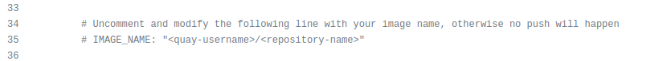
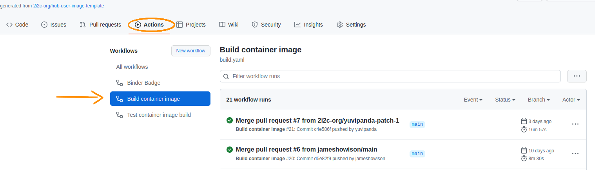
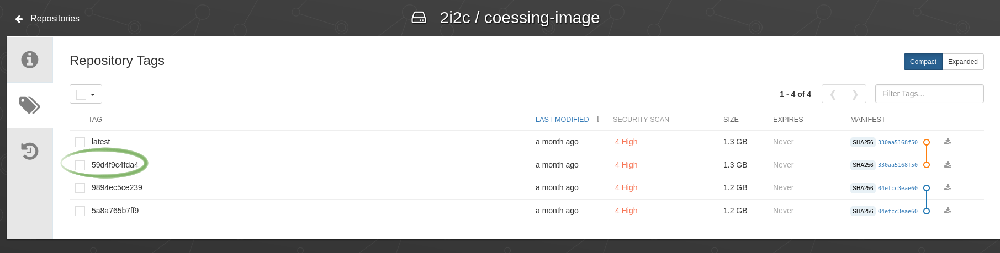
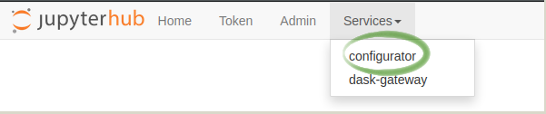

This section describes how you can create a custom user image for your community’s hub.
It uses this hub-user-image-template repository to help you get started.
The image repository is bundled with a GitHub Action that will build a Docker Image from the configuration you’ve defined in the repository.
To use this image, you’ll need to connect the repository to an Image Registry where we will push images.
We’ll use the repo2docker-action docs to guide us.
Step 2 should have provided the appropriate credentials to push the image to quay.io via GitHub Actions.
This template repository provides a GitHub Actions workflow that is configured to use these credentials to build and push the image to quay.io, but it needs additional configuration.
Below are the steps to configure each option.
The build.yaml workflow builds the container image and pushes it to quay.ioif credentials and image name are properly set.
This happens on every pushed commit on the main branch of the repo (including when a PR is merged).
The image is also built for every commit pushed to a Pull Request, but is not pushed to quay.io by default.
To enable pushing to the appropriate quay.io repository, edit line 47 of build.yaml and:
Uncomment the IMAGE_NAME option
Replace <quay-username>/<repository-name> with the info of the quay.io repository created at step 2
Commit the changes you’ve made to build.yaml

You can checkout the logs of this GitHub Workflow via the Github Actions tab on your image repository.

If you are triggering this action by merging a PR or directly pushing to the main branch, you should look at the Github Actions tab and this will show a pushingquay.io/... message, followed by the image name and tag like in the image below.
The build.yaml workflow builds the container image on pull requests.
It can also push it to quay.ioif the NO_PUSH input is removed.
To enable pushing to the appropriate quay.io repository, edit line 33 of build.yaml and comment out or remove the NO_PUSH input.
Tip
The Optional Inputs section in the jupyterhub/repo2docker-action docs provides more details about the NO_PUSH option, alongside additional inputs that can also be passed to the repo2docker-action.
If configured correctly, you will see a pushingquay.io/... message in the GitHub Actions logs when you have committed directly to main/merged a PR and pushed a commit to a PR.
Modify the environment.yml file and add all the packages you want installed in the conda environment.
Note that repo2docker already installs this list of packages.
More about what you can do with environment.yml, can be found in the repo2docker docs.
Commit the changes made to environment.yml.
Create a Pull Request with this commit, or push it directly to the main branch.
If you merge the PR above or directly push the commit to the main branch, the GitHub Action will automatically build and push the container image. Wait for this action to finish.
Images generated by this action are automatically tagged with both latest and <SHA> corresponding to the relevant commit SHA on GitHub.
Both tags are pushed to the image registry specified by the user.
If an existing image with the latest tag already exists in your registry, this Action attempts to pull that image as a cache to reduce unnecessary build steps.
Checkout an example of a quay.io respository that hosts the user environment image of a 2i2c hub.
In order to be able to pull the image you need to make sure that your repository is public on your registry. For quay.io you can set this under 'RepositorySettings'>'RepositoryVisibility'
Go to the list of image tags on quay.io, and find the tag of the last push.
This is usually under the latest tag.
Use this to construct your image name - quay.io/<quay-username>/<repository-name>:<tag>.

Open the Configurator for the hub (you need to be logged in as an admin).
You can access it from the hub control panel, under Services in the top bar or by going to https://<hub-address>/services/configurator/

Make a note of the current image name there.
Put the image tag you constructed in a previous step into the User docker image text box. Note quay web urls look like quay.io/repository/2i2c/coessing-image, but the docker image name in configurator should not include the repository part of the URL e.g. quay.io/2i2c/coessing-image:55adca9b2caa.
Click Submit! this is alpha level software, so there is no ‘has it saved’ indicator yet :)
Test the new image by starting a new user server!
If you already had one running, you need to stop and start it again to test.
If you find new issues, you can revert back to the previous image by entering the old image name in the JupyterHub Configurator.
This will be streamlined in the future.
Appendix: Push the image to a registry other than Quay.io :cloud:#